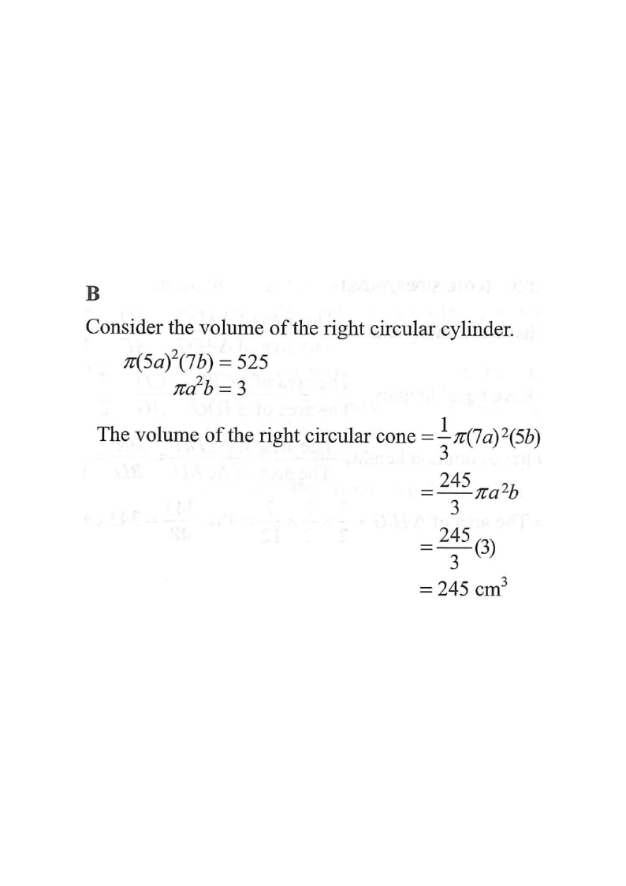

求積法 · 圓柱與圓錐體積

$$\pi(5a)^{2}(7b)=175\pi a^{2}b=525\quad\Rightarrow\quad\pi a^{2}b=3$$
不要把 $a$、$b$ 各自解出（不可能），只需保留乘積 $\pi a^{2}b$。
$$\frac{1}{3}\pi(7a)^{2}(5b)=\frac{1}{3}\pi\cdot49a^{2}\cdot5b=\frac{245}{3}\pi a^{2}b$$
$$V=\frac{245}{3}\times3=245$$
故圓錐體積為 $245\ \text{cm}^{3}$，答案 B。選項 A 是漏掉 $\dfrac{1}{3}$ 之前的係數處理；選項 D 則把 $\dfrac{1}{3}$ 完全忽略。